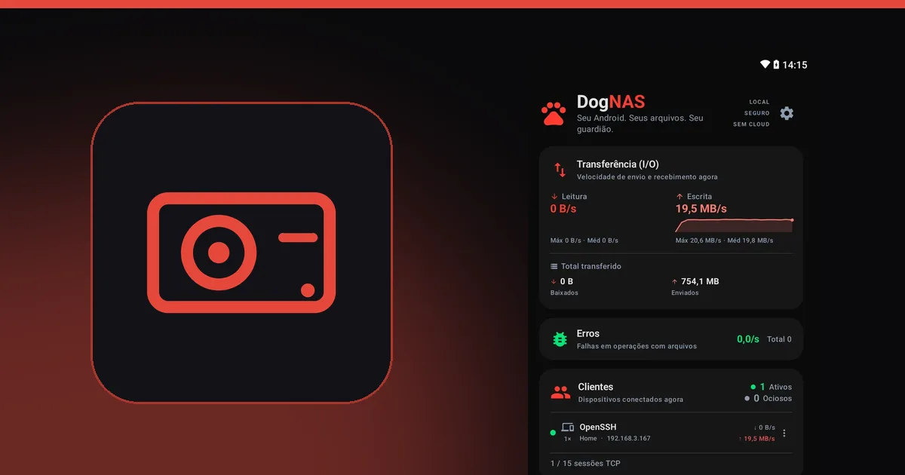

Como reaproveitar o HD de um notebook antigo como armazenamento da casa

Quando você troca o HD de um notebook por um SSD, o disco antigo costuma ir para a gaveta. Ele ainda funciona e pode ter centenas de gigabytes. Com uma case USB e um Android que sirva de servidor, esse disco ganha uma nova função: espaço extra para as fotos, os vídeos e os documentos da casa.

O que você precisa
- Um HD ou SSD de notebook que ainda funcione. Antes de usar, copie para outro lugar qualquer coisa que ainda esteja nele.
- Uma case ou dock USB compatível com o formato do disco.
- Um celular ou tablet Android com USB OTG, que é o que permite ligar discos USB ao aparelho, e o cabo ou adaptador certo.
- O DogNAS instalado nesse Android, que será o servidor.
Passo a passo
- Coloque o disco na case USB e confirme que ele aparece normalmente.
- Ligue a case ao Android pelo cabo OTG.
- No DogNAS, escolha o disco USB como o lugar onde os arquivos serão guardados e toque em Iniciar.
- Crie os perfis e conecte os outros aparelhos por QR Code e PIN.
A partir daí, o disco é o armazenamento do seu servidor, acessado pelo Wi-Fi da casa.
Cuidados importantes
- Energia. HDs mecânicos podem pedir mais energia do que o celular fornece. Se o disco não ligar ou desconectar, use um hub USB com fonte própria. SSDs costumam gastar menos.
- Compatibilidade. O resultado depende do aparelho, da case e do disco. Teste antes de depender dele.
- Um disco, sem redundância. O DogNAS não junta vários discos num único volume e não faz backup por conta própria. Um disco pode falhar, e um disco antigo, mais ainda. Mantenha uma cópia independente do que é importante.
- Espaço. No plano Grátis, o DogNAS gerencia até 64 GB, mesmo que o disco seja maior. O Pro, compra única e sem assinatura, usa o disco inteiro.
Vale a pena?
Se você já tem o disco e a case, o custo é quase zero, e o resultado é um servidor com bastante espaço para a família. Se for comprar tudo do zero, compare com um NAS ou com um SSD externo, e veja NAS tradicional ou servidor Android para decidir.
Para montar o servidor, comece por como transformar um Android antigo em servidor de arquivos.